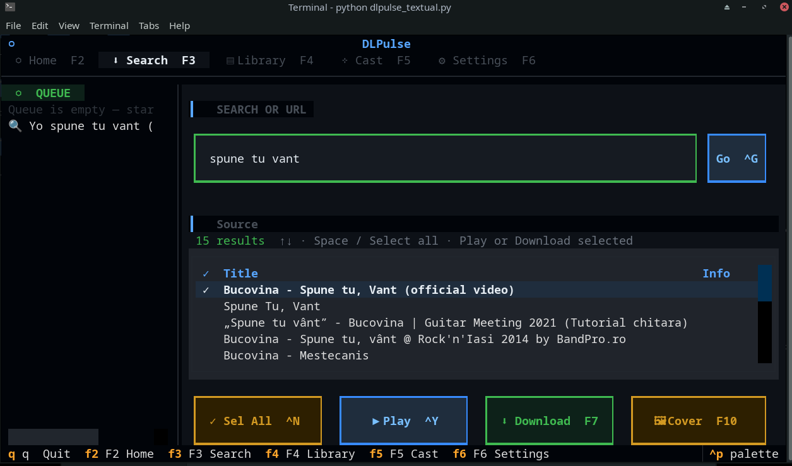
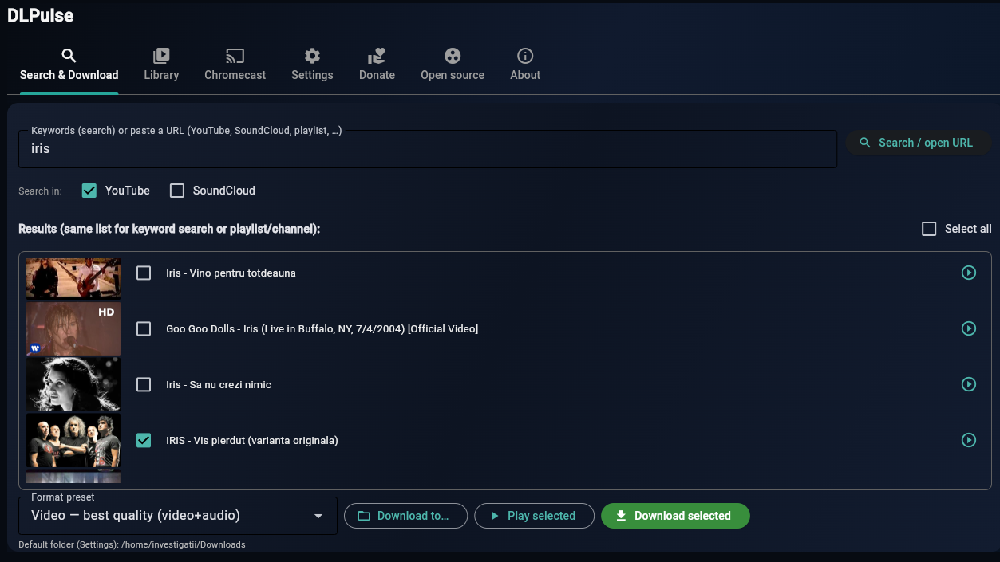
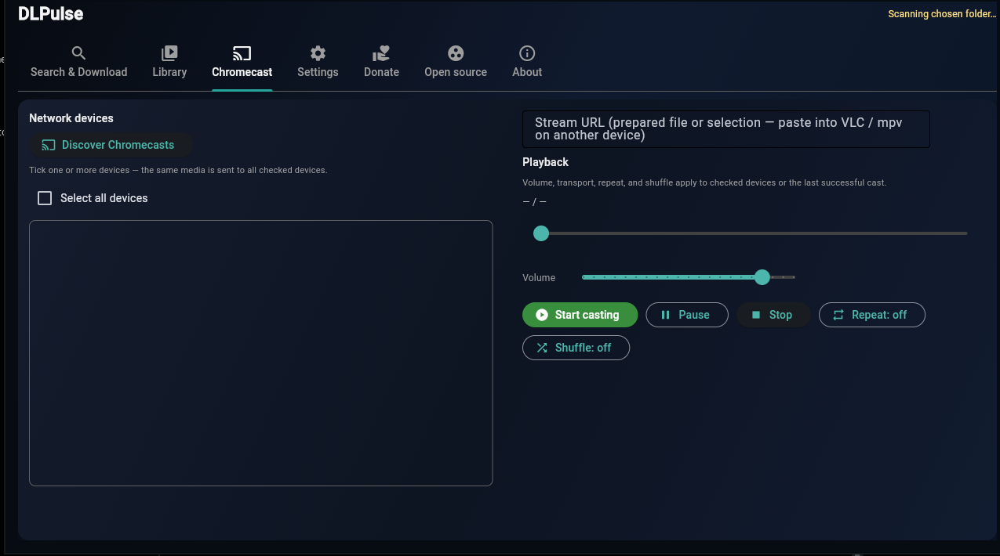
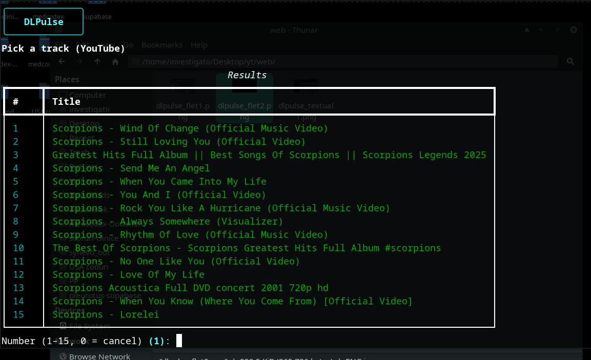
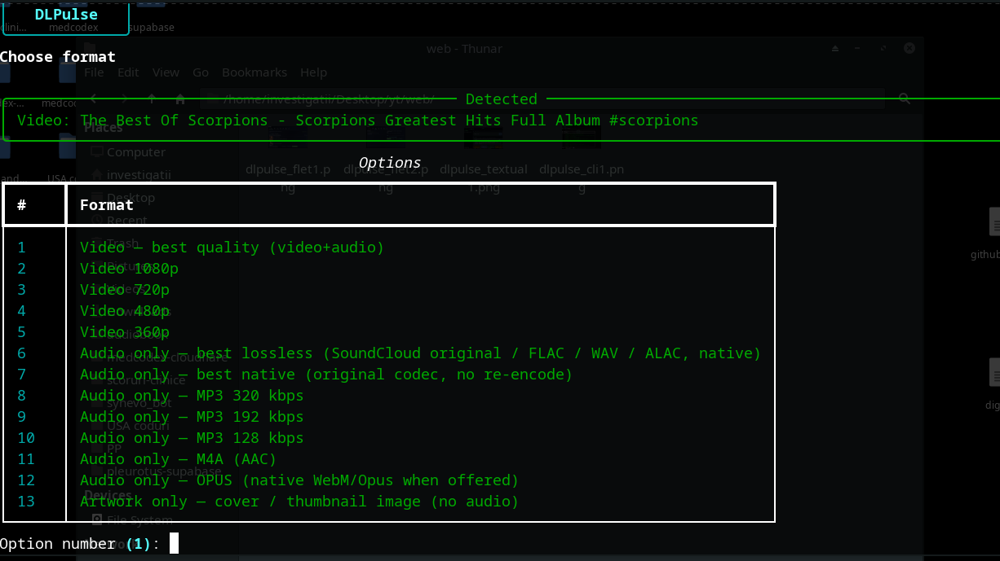
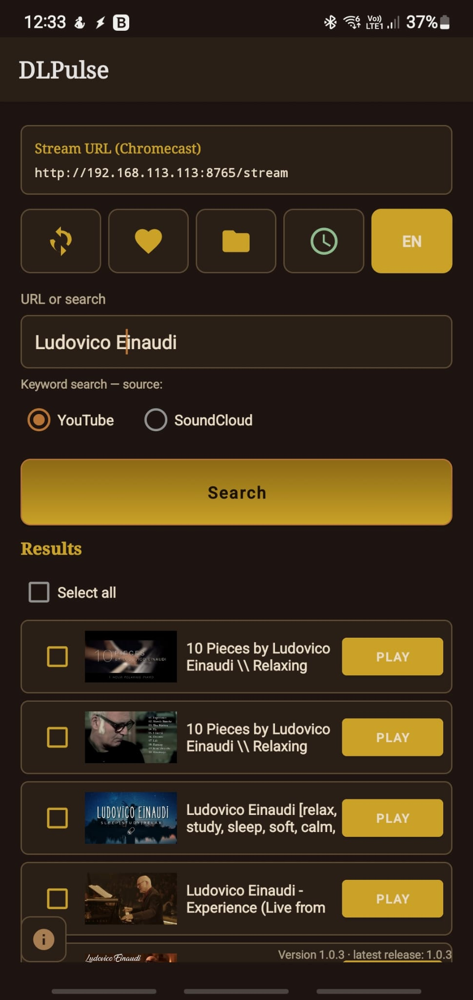

DLPulse Textual
Terminal-first TUI for YouTube/SoundCloud search, URL pasting, and shell-style download management.
GitHub RepositoryCross-platform ecosystem, multiple experiences
DLPulse is a cross-platform project available on Linux, macOS,
Windows, and Android. Choose the edition that fits your workflow and
download media fast with
yt-dlp.
Each edition is optimized for a different usage style.
Terminal-first TUI for YouTube/SoundCloud search, URL pasting, and shell-style download management.
GitHub RepositoryFull desktop app (plus web/API in the project), with a graphical experience, local library, and Chromecast support.
GitHub RepositoryLightweight edition for scripting, automation, and headless environments, with fast commands for search, download, and playback.
GitHub Repository
Android app running yt-dlp locally on device:
download, search, built-in player, and Chromecast casting.
Stable release tracks for the main DLPulse editions.
Latest stable release: v1.0.3. Includes desktop app updates and packaged assets.
View ReleasesLatest stable release: v1.0.6. Updated Textual TUI builds and distribution artifacts.
View ReleasesLatest stable release: v1.0.3. APK releases ready for sideload installation.
View ReleasesA quick look at the key interfaces across the ecosystem.





